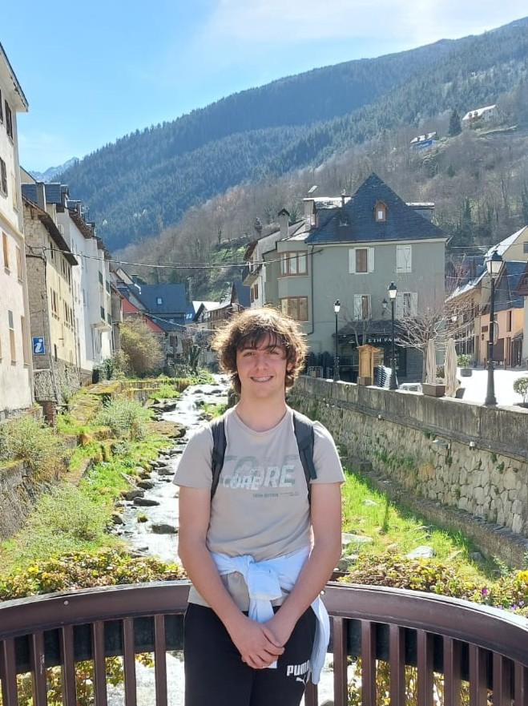

Soy estudiante de 2º de Bachillerato con una fuerte pasión por las matemáticas y la informática. Desde los 7 años me he formado de forma autodidacta en programación, adquiriendo experiencia con lenguajes como Scratch, Python, JavaScript y C#, además de conocimientos sólidos en desarrollo web básico (HTML, CSS y JavaScript). Disfruto compartiendo lo que sé, por lo que también tengo habilidades para dar clases y explicar conceptos de forma clara y efectiva.
